云XR实时渲染平台服务实例部署文档
免责声明：本文档可能包含第三方产品信息，该信息仅供参考。阿里云对第三方产品的性能、可靠性以及操作可能带来的潜在影响，不做任何暗示或其他形式的承诺。
阿里云云XR平台提供3D应用和元宇宙应用的实时渲染计算、音视频流推送服务和应用发布与用户管理服务，可以帮助您将已运行在本地GPU工作站或本地服务器上的3D应用或元宇宙应用在云上发布，您可以使用多种流行终端随时随地的接入应用。本文向您介绍如何部署云XR实时渲染平台服务实例。
前提条件
部署云XR实时渲染平台服务实例前，您的阿里云账号需满足以下条件：
-
由于该服务需要购买云市场镜像，因此您的账号需要有购买云市场镜像商品的权限。
-
创建云XR实时渲染平台服务实例，需要对部分阿里云资源进行访问和创建操作。因此您的账号需要包含如下资源的权限。 说明 当您的账号是RAM账号时，才需要添加此权限。
| 权限策略名称 | 备注 |
|---|---|
| AliyunECSFullAccess | 管理云服务器服务（ECS）的权限 |
| AliyunVPCFullAccess | 管理专有网络（VPC）的权限 |
| AliyunROSFullAccess | 管理资源编排服务（ROS）的权限 |
| AliyunESSFullAccesss | 管理弹性伸缩服务（ESS）的权限 |
| AliyunComputeNestUserFullAccess | 管理计算巢服务（ComputeNest）的用户侧权限 |
| AliyunOSSFullAccess | 管理对象存储服务（OSS）权限 |
| AliyunCloudMonitorFullAccess | 管理云监控（CloudMonitor）的权限 |
费用说明
云XR实时渲染平台服务的费用如下：
-
ECS实例、云盘和网络流量的费用为标准费用。
-
云市场收费镜像费用：渲染节点数量 x 镜像基础费用。镜像基础费用如下表所示。
| 适用实例规格族 | GRID驱动版本 | 按量付费 | 包月 | 包年 |
|---|---|---|---|---|
| vgn6i-vws, vgn7i-vws | 463.15 | 0.67元/时 | 320元/月 | 3200元/年 |
| gn6i, gn7i | 513.46 | 1.13元/时 | 540元/月 | 5840元/年 |
开放端口说明
云XR部署在阿里云，管理节点和渲染节点都有外网IP，并且集群部署在同一个私网内。通过外网访问云XR时，管理节点和渲染节点需要开放的端口说明如下表所示。
管理节点
| 端口 | 协议 | 是否必须开放 | 用途 | 备注 |
|---|---|---|---|---|
| 8181 | TCP | 是 | 前台页面及接口服务 | 无 |
| 8182 | TCP | 否 | 管理后台页面 | 根据您的需要选择是否开放该端口。 如果考虑安全性可以不开放，但管理云XR后台需要通过远程登录到管理节点后，在本地访问管理后台的页面。 |
渲染节点
| 端口 | 协议 | 是否必须开放 | 用途 | 备注 |
|---|---|---|---|---|
| 10002 | TCP | 是 | WebSocket端口 | 无 |
| 10011-10030 | UDP | 是 | 流媒体端口 | 一路并发占用一个端口，可以根据自己应用在单个渲染节点的最大并发数来按需开放端口。 |
使用说明
-
登录计算巢控制台，在 推荐服务 页，找到 云XR实时渲染平台 服务。
-
单击 正式创建 或者直接从服务商处获取部署链接。进入服务实例部署页面。
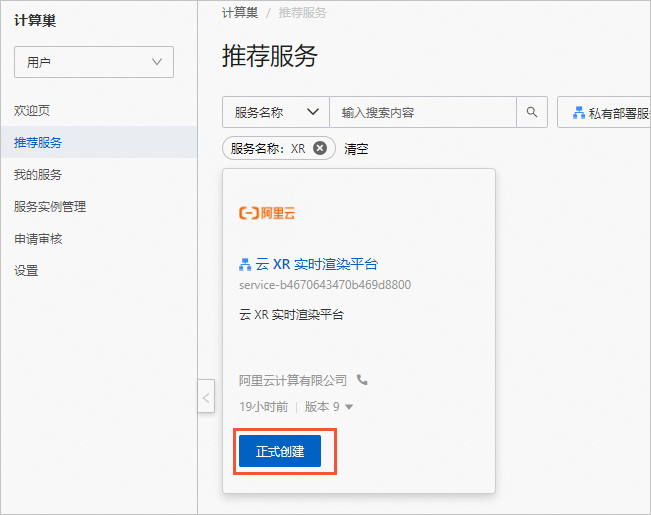
- 在创建服务实例页面，需先选中 同意授权并创建关联角色 ，选中后即可继续创建服务实例。
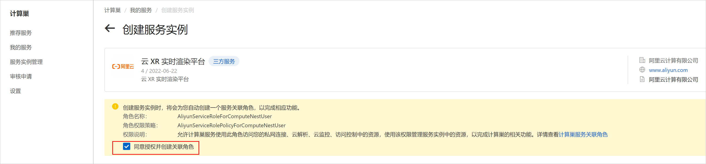
- 在创建服务实例页面，根据界面提示填写参数完成部署。
根据场景需求，选择对应的实例规格和GRID驱动版本。详细的实例规格和对应的驱动版本如下表所示。
| 适用实例规格族 | GRID驱动版本 |
|---|---|
| vgn6i-vws，vgn7i-vws | 463.15 |
| gn6i，gn7i | 513.46 |
参数说明
您在创建服务实例的过程中，需要配置服务实例信息。下文介绍云XR实时渲染平台服务实例输入参数的详细信息。
| 参数组 | 参数项 | 示例 | 说明 |
|---|---|---|---|
| 地域 | 华北2（北京） | 选中服务实例的地域，建议就近选则，以获取更好的网络体验。 当前地域仅支持：华北2（北京）、华北3（张家口）、华东1（杭州）、华东2（上海）、华南1（深圳）、华南2（河源）、华南3（广州）、西南1（成都）和中国香港。 | |
| 渲染节点 | 节点数量 | 1 | 设置创建的GPU ECS数量。 一个节点支持一路应用，创建后节点数量不可更改。 |
| 渲染节点 | 实例规格 | ecs.vgn6i-m4-vws.xlarge | 选择渲染节点的实例规格。 当前服务只支持以下两种共4个vGPU规格： * vgn6i-vws/vgn7i-vws * gn6i/gn7i |
| 渲染节点 | 系统盘类型 | cloud_essd | 选择渲染节点的系统盘类型。可选值： * cloud_efficiency：高效云盘 * cloud_ssd：SSD云盘 * cloud_essd：ESSD云盘 |
| 渲染节点 | 系统盘大小 | 40 | 设置渲染节点的系统盘大小。默认值：40，取值范围：40\~500，单位GiB。 |
| 渲染节点 | 是否创建数据盘 | 否 | 默认不需要使用数据盘。 |
| 管理节点 | 实例规格 | ecs.s6-c1m2.xlarge | 选择管理节点的实例规格。 |
| 管理节点 | 系统盘类型 | cloud_essd | 选择管理节点的系统盘类型。可选值： * cloud_efficiency：高效云盘 * cloud_ssd：SSD云盘 * cloud_essd：ESSD云盘 |
| 管理节点 | 系统盘大小 | 40 | 设置管理节点的系统盘大小。默认值：40，取值范围：40\~500，单位GiB。 |
| 管理节点 | 是否创建数据盘 | 否 | 默认不需要使用数据盘。 |
| 基础配置 | VPC ID | vpc-xxx | 选择专有网络的ID。 |
| 基础配置 | 交换机可用区 | 可用区 H | 选择交换机的可用区。若可用区为空, 可能是选定的实例规格无库存，请尝试切换 渲染节点 的实例规格。 |
| 基础配置 | 交换机ID | vsw-xxx | 选择交换机ID。若找不到交换机, 可尝试切换地域和可用区 |
| 基础配置 | 实例密码 | ******** | 设置实例密码。长度8\~30个字符，必须包含三项（大写字母、小写字母、数字、 ()`\~!@#$%\^\&*_-+=|{}[]:;'\<>,.?/ 中的特殊符号）。 |
| 基础配置 | 付费模式 | PostPaid | 选择付费模式。可选值： * PostPaid：按量付费 * PrePaid：预付费，包年包月 |
| 基础配置 | 流量付费类型 | PayByTraffic | 选择流量付费类型。可选值： * PayByTraffic：按流量付费 * PayByBandwidth：按带宽付费 |
| 基础配置 | 公网带宽 | 100 | 设置公网带宽。取值范围：0\~100，单位：Mbps。 当公网带宽设置为0时，表示没有公网IP。若无公网IP时，需要确保实例能以其他方式访问外网，以便能够顺利激活本产品。 |
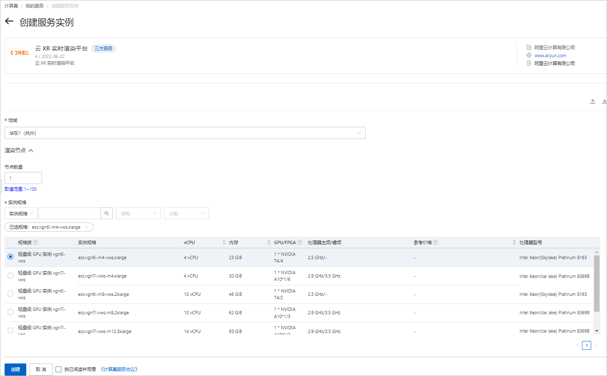
查看服务实例
服务实例创建成功后，部署时间大约需要10分组。部署完成后，您需要获取管理节点IP用于后续操作。
-
打开服务实例管理页面中，单击服务实例ID，进入服务实例详情页面。
-
单击 资源 页签，找到管理节点（管理节点的资源名称为xr-admin），记录管理节点的公网IP地址（例如123.56.x.x）。
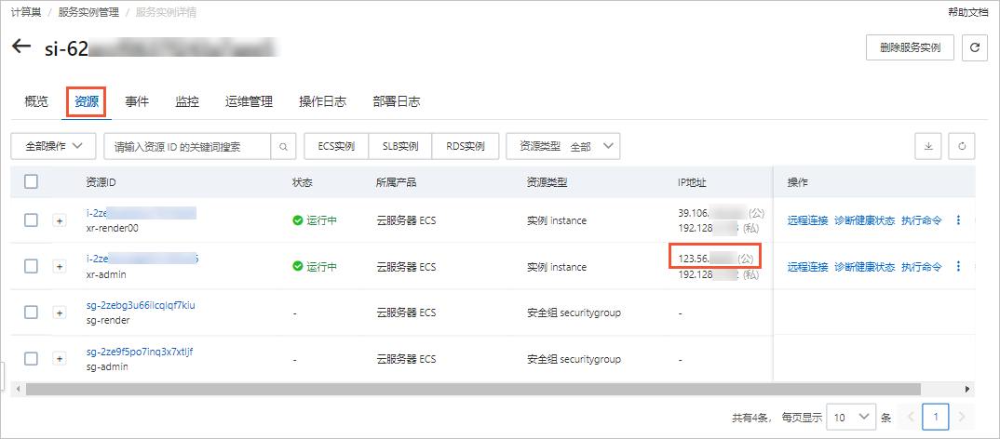
登录云XR管理页并添加应用
-
登录管理页。
-
使用管理节点IP加8182端口，登录管理页面。本文以上文获取的管理节点的IP地址http://123.56.x.x:8182为例。
-
在登录页面输入登录ID、密码和验证码后，单击 登录 。
首次登录云XR，使用默认登录ID和密码。
-
登录ID：admin
-
密码：123456
重要 为保证您的账号安全，首次登录云XR后，请先修改密码。
登录云XR管理页后，在左侧导航栏中单击 修改密码 ，即可进入修改密码页面进行修改。
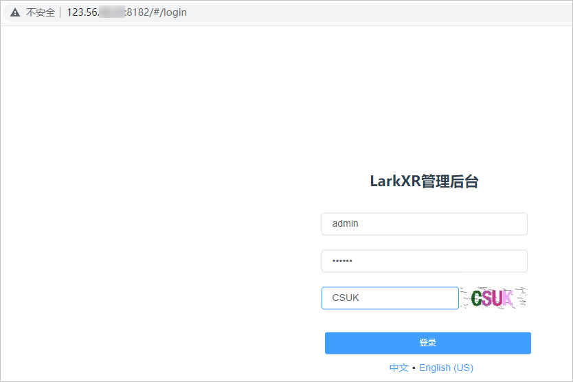
-
-
您可以在资源监控页面，查看当前服务的资源信息。
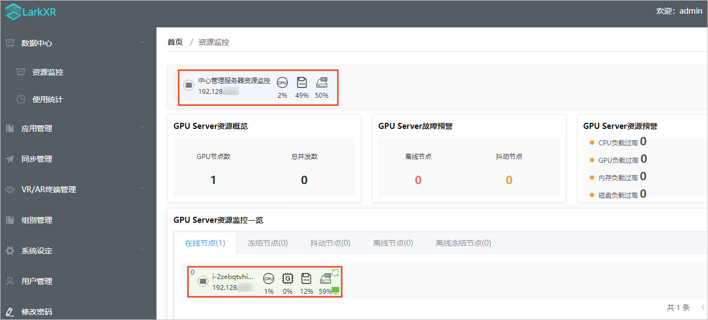
-
添加应用。
-
在云XR管理页的左侧导航栏中，选择 应用管理 > 应用一览 。
-
在 应用一览 页面中，单击 添加应用 。
-
在 添加应用 页面，选择 上传绿色面安装版程序 并单击 下一步 。
-
单击虚线框中的 点击上传 ，在弹出的弹框中选择您要上传的3D应用的zip包，或者将zip包直接拖入虚线框中。
若您想测试添加功能，可使用我们为您提供的测试应用。单击Unity-LEGO.zip，可下载测试应用包。
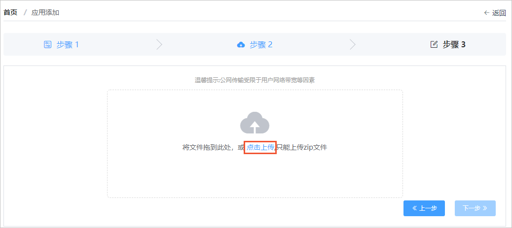
-
上传完成后，单击 下一步 ，在弹出的界面中，根据你上传的应用包填写数据。
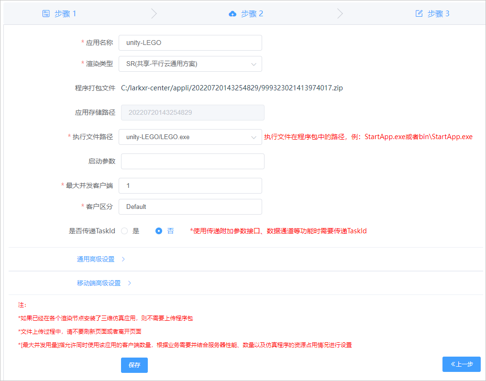
-
单击 保存 。
保存后可在 应用一览 界面查看应用信息。
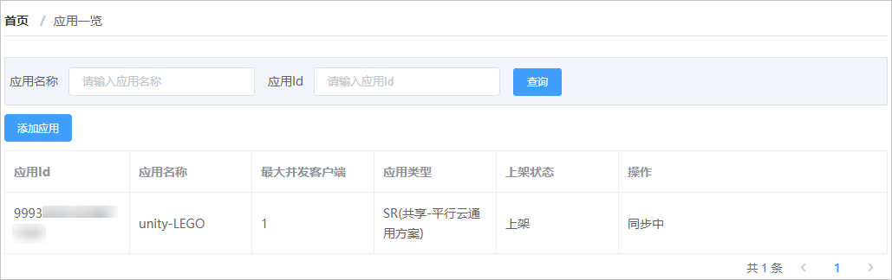
访问云XR应用
应用上传成功后，您可以登录应用展示页查看应用。
-
使用管理节点IP加8181端口，登录应用展示页，单击 进入应用 。
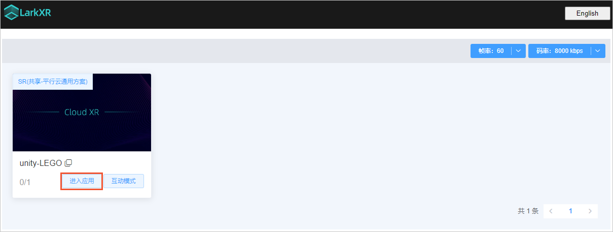
-
进入应用后，您可以进行如下操作。
-
在应用内部时，您可以通过应用支持的输入方式来操控。如测试应用unity-LEGO为例，您可以使用键盘的W、A、S、D控制移动；单击或双击空格，控制小跳或大跳；单击TAG键设置菜单。
-
单击右下角的控制球，会展开铺满、全屏、网络等二级菜单。
-
单击Esc键可切出应用。
-
单击二级菜单中的退出或直接关闭浏览器的标签页即可退出程序。
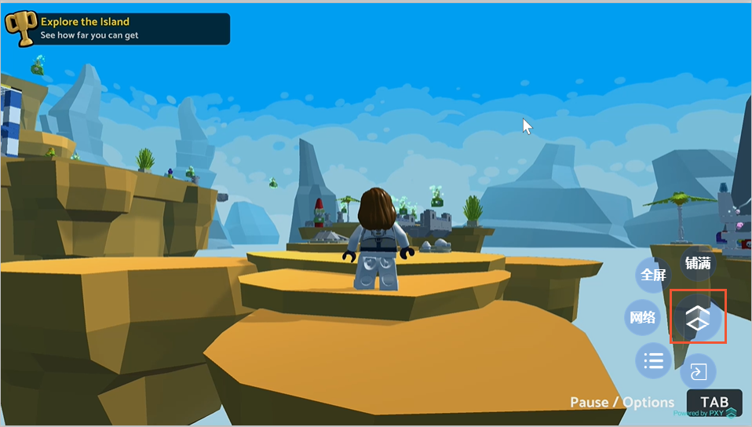
XR集群运维
当服务实例的集群渲染节点个数不满足需要时, 可通过计算巢的扩容功能来增加渲染节点。
-
登录计算巢控制台。
-
在左侧导航栏中，单击 服务实例管理 ，进入服务实例管理页面。
-
单击服务实例ID，进入服务实例详情页。然后单击 运维管理 页签。
-
在 应用运维 区域，单击 弹性扩缩容 。
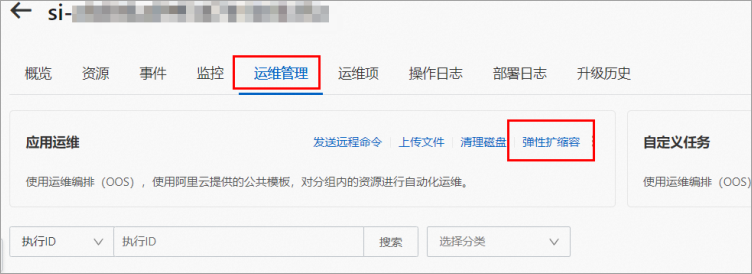
- 在弹出的 弹性扩缩容 弹框中，配置对应的扩容参数并单击 下一步 。
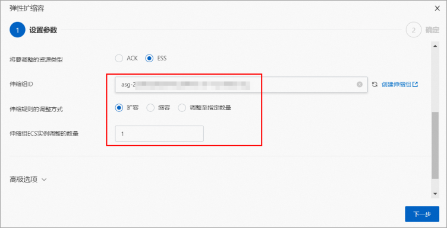
- 确认参数信息后，单击 确定 。完成扩容。